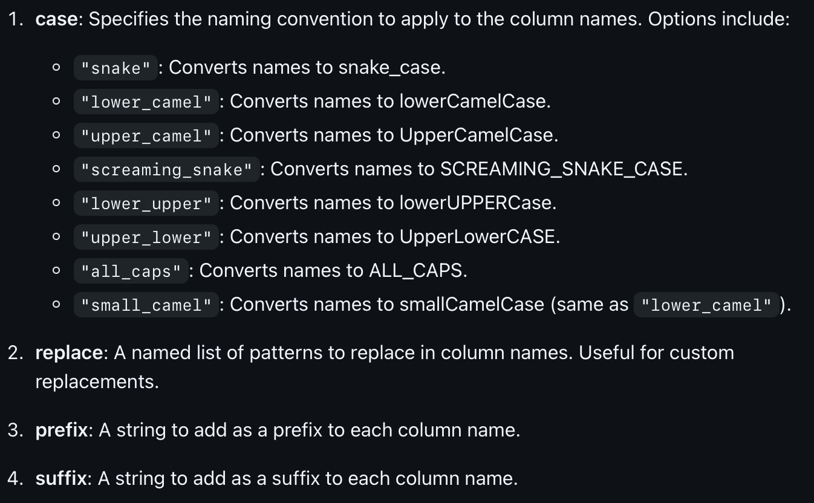

We have seen several different functions from the dplyr library that can be used to clean data. In this document, we will see a few more functions that can be used to clean data. While we will go over several different functions, we are still just beginning to scratch the surface of what is possible with data cleaning. As you advance in your data science journey, you will see that there are many different solutions one could come up with to solve the same problem.
clean_names( )
The clean_names function is part of the janitor library.
The clean_names function is used to clean column (variable) names. Sometimes the names of the columns are not in the format that we would like. Maybe we want them to be in all lower case, or maybe we want to replace spaces with underscores. The clean_names function can be used to clean the column names. Here are the different options you can use with the clean_names function:

Consider the following data frame:
# create a data framedf <-data.frame("First Name"=c("MikE", "JOHN", "sue"),"Last Name"=c("LeVaN", "Doe", "SmiTH"),"Age"=c(30, 40, 50))df
First.Name Last.Name Age
1 MikE LeVaN 30
2 JOHN Doe 40
3 sue SmiTH 50
If we use the default clean_names function, the column names will be converted to lower case and spaces will be replaced with underscores.
first_name last_name age
1 MikE LeVaN 30
2 JOHN Doe 40
3 sue SmiTH 50
Notice that we are changing the variable names, and not the actual data itself. We will do that later in this section.
clean_names() has a few arguments that can be used to customize the cleaning process. For example, we can use the case argument to specify whether we want the column names to be in lower case, upper case, or title case. We can also use the snake_case argument to specify whether we want to replace spaces with underscores.
df_upper <-clean_names(df, "all_caps") df_upper
FIRST_NAME LAST_NAME AGE
1 MikE LeVaN 30
2 JOHN Doe 40
3 sue SmiTH 50
If we wanted to add the prefix my_ to each column name, we could do the following:
my_first_name my_last_name my_age
1 MikE LeVaN 30
2 JOHN Doe 40
3 sue SmiTH 50
At this point the clean_names() function can only perform one operation at a time. If you want to perform multiple operations, you will need to use the clean_names() function multiple times.
df_multiple <-clean_names(df, prefix="my_")df_multiple2 <-clean_names(df_multiple, case ="all_caps")df_multiple2
MY_FIRST_NAME MY_LAST_NAME MY_AGE
1 MikE LeVaN 30
2 JOHN Doe 40
3 sue SmiTH 50
Why is it important to clean the column names? It is important to clean the column names because it makes it easier to work with the data. For example, if we want to select a column from the data frame, we can use the $ operator. If the column name has spaces, we will need to use the backticks to select the column. This can be cumbersome. It is also important to clean the column names because it makes the data easier to read, as well as writing code that will work with standardized data.
We are now going to see how to clean the data itself.
str_replace( )
The str_replace function is used to replace a pattern in a string with another pattern. The str_replace function is part of the stringr library.
library(stringr)# create a vector of stringsx <-c("apple", "banana", "cherry", "date")# replace "a" with "z"str_replace(x, "a", "z")
[1] "zpple" "bznana" "cherry" "dzte"
The str_replace_all function can also be used to replace multiple patterns at once if we create a vector of the patterns we want to change.
# Create a sample stringstr <-"The quick brown fox jumps over the lazy dog."# Create a named vector of patterns and replacementspatterns <-c("quick"="slow", "brown"="black", "lazy"="energetic")# Perform multiple replacements at onceresult <-str_replace_all(str, patterns)print(result)
[1] "The slow black fox jumps over the energetic dog."
# Output: "The slow black fox jumps over the energetic dog."
The str_replace function can also be used to replace patterns that are not characters. For example, we can use the str_replace function to replace numbers.
# create a vector of stringsy <-c("apple1", "banana2", "cherry3", "date4")# replace numbers with "z"str_replace(y, "[0-9]", "z")
[1] "applez" "bananaz" "cherryz" "datez"
tolower( ) and toupper( )
The tolower() and toupper() functions can be used to convert strings to lower case and upper case, respectively. This is useful when we want to standardize the case of the strings in a data frame or to make the data easier to read.
# create a vector of stringsz <-c("Apple", "Banana", "Cherry", "Date")# convert to lower casetolower(z)
[1] "apple" "banana" "cherry" "date"
# convert to upper casetoupper(z)
[1] "APPLE" "BANANA" "CHERRY" "DATE"
Note that this command is only being used for a single vector. If we wanted to convert all of the columns in a data frame to lower case, we would need to use the lapply() function.
# create a data framedf2 <-data.frame("First Name"=c("MikE", "JOHN", "sue"),"Last Name"=c("LeVaN", "Doe", "SmiTH"),"Age"=c(30, 40, 50))df2_cleaned <-lapply(df2, tolower)
If you notice the result, we have also created a problem for ourselves. The column “Age” now has quotation marks around it. In fact, take a look at the class of df2_cleaned.
class(df2_cleaned)
[1] "list"
The data frame is now a list! Really, it is a list of characters. This is because the lapply() function converts the entire data frame to a character.
We will see how to convert this back to a data frame in the next section.
Type Conversion
There are times when data that should be numeric is stored as a character. This can happen when the data is imported from a file or when the data is manually entered. When this is the case, we can not perform mathematical operations on the data. Instead of reentering all of the data, we need to use R to convert this for us.
We can use the as.numeric() function to convert a character to a numeric.
# create a vector of strings that we meant to type in as numbers :num <-c("1", "2", "3", "4")
Because we used quotes around the numbers, they are stored as characters. That means we can not perform mathematical operations on them. For example, what if we wanted to add the second and third elements of the vector together?
num[2] + num[3]
Error in num[2] + num[3]: non-numeric argument to binary operator
You can see from the error message that R considers these to be non-numeric so it can not perform the operation. If you are unsure of the class of the data, you can use the class() function to check.
# We can check the class of the data using the class() function.class(num)
[1] "character"
This verifies that the data is stored as a character. We can convert this to a numeric using the as.numeric() function. Don’t forget to assign the result to a new object.
num2 <-as.numeric(num)# We can check the new type :class(num2)
[1] "numeric"
# And verify by looking at the vector.num2
[1] 1 2 3 4
Now that the vector is stored as a numeric, we can perform mathematical operations on it.
num2[2] + num2[3]
[1] 5
From the earlier example, we had a data frame that was turned into a list. We can convert this back to a data frame using the as.data.frame() function.
As you can see, the data frame is now a data frame again. However, the variable “Age” is still a character. We can convert this to a numeric using the as.numeric()
There are several different conversions we can make. For example, we can convert a character to a factor using the as.factor() function. We can convert a factor to a character using the as.character() function. We can convert a factor to a numeric using the as.numeric() function.
Warning
Be careful when performing data cleaning. Make sure your data types are correct before performing operations on them. If you are unsure of the data type, use the class() function to check.
Exercises
Instructions
For this assignment, you will be provided with a sample dataset. You are required to perform various data cleaning tasks using the specified commands. Complete each problem and provide the cleaned dataset as the solution.
Be careful to keep track of the changes you are making throughout the exercise set. The changes you make WILL affect how you code the next problem.
Use the clean_names() function to standardize the column names of the dataset to snake_case.
Code
library(janitor)data_cleaned <-clean_names(data, case ="snake")print(data_cleaned)
first_name last_name age income_usd join_date
1 John Smith 28 60000 2022-01-15
2 Jane Doe 34 75000 2021-05-20
3 Doe Johnson 45 50000 2023-07-30
4 Alice Brown 23 80000 2022-11-05
5 Bob Davis 37 55000 2021-09-17
Problem 2 Replace Substrings
For data_cleaned, use the str_replace() function to replace the substring “Doe” with “Smith” in the “Last Name” column.
first_name last_name age income_usd join_date
1 John Smith 28 60000 2022-01-15
2 Jane Smith 34 75000 2021-05-20
3 Doe Johnson 45 50000 2023-07-30
4 Alice Brown 23 80000 2022-11-05
5 Bob Davis 37 55000 2021-09-17
Problem 3 Convert to Lower Case
Next, use the tolower() function to convert all the values in the “First Name” column to lower case.
first_name last_name age income_usd join_date
1 john Smith 28 60000 2022-01-15
2 jane Smith 34 75000 2021-05-20
3 doe Johnson 45 50000 2023-07-30
4 alice Brown 23 80000 2022-11-05
5 bob Davis 37 55000 2021-09-17
Problem 4 Convert to Upper Case
Continuing, use the toupper() function to convert all the values in the “Last Name” column to upper case.
first_name last_name age income_usd join_date
1 john SMITH 28 60000 2022-01-15
2 jane SMITH 34 75000 2021-05-20
3 doe JOHNSON 45 50000 2023-07-30
4 alice BROWN 23 80000 2022-11-05
5 bob DAVIS 37 55000 2021-09-17
Problem 5 Clean Column Names to All Caps
Use the clean_names() function to standardize the column names of the dataset to ALL_CAPS.
Code
data_cleaned <-clean_names(data_cleaned, case ="all_caps")print(data_cleaned)
FIRST_NAME LAST_NAME AGE INCOME_USD JOIN_DATE
1 john SMITH 28 60000 2022-01-15
2 jane SMITH 34 75000 2021-05-20
3 doe JOHNSON 45 50000 2023-07-30
4 alice BROWN 23 80000 2022-11-05
5 bob DAVIS 37 55000 2021-09-17
Problem 6 Multiple Substring Replacements
Use the str_replace_all() function to perform multiple replacements in the “Last Name” column, replacing “Smith” with “Johnson” and “Brown” with “White”.
FIRST_NAME LAST_NAME AGE INCOME_USD JOIN_DATE
1 john JOHNSON 28 60000 2022-01-15
2 jane JOHNSON 34 75000 2021-05-20
3 doe JOHNSON 45 50000 2023-07-30
4 alice WHITE 23 80000 2022-11-05
5 bob DAVIS 37 55000 2021-09-17
Problem 7 Convert to Lower Case for All Columns
Use the tolower() function to convert all the values in the entire dataset to lower case. Don’t forget to change the variables that are supposed to be numeric back to their proper form.
Code
data_cleaned <-as.data.frame(lapply(data_cleaned, tolower))# Correct the Data Type for Age, Income, and Join Datedata_cleaned$AGE <-as.numeric(data_cleaned$AGE)data_cleaned$INCOME_USD <-as.numeric(data_cleaned$INCOME_USD)data_cleaned$JOIN_DATE <-as.Date(data_cleaned$JOIN_DATE)# Check the resultprint(data_cleaned)
FIRST_NAME LAST_NAME AGE INCOME_USD JOIN_DATE
1 john johnson 28 60000 2022-01-15
2 jane johnson 34 75000 2021-05-20
3 doe johnson 45 50000 2023-07-30
4 alice white 23 80000 2022-11-05
5 bob davis 37 55000 2021-09-17
Problem 8 Convert to Upper Case for All Columns
Use the toupper() function to convert all the values in the entire dataset to upper case. Don’t forget to change the variables that are supposed to be numeric back to their proper form.
Code
data_cleaned <-as.data.frame(lapply(data_cleaned, toupper))# Correct the Data Type for Age, Income, and Join Datedata_cleaned$AGE <-as.numeric(data_cleaned$AGE)data_cleaned$INCOME_USD <-as.numeric(data_cleaned$INCOME_USD)data_cleaned$JOIN_DATE <-as.Date(data_cleaned$JOIN_DATE)# Check the resultprint(data_cleaned)
FIRST_NAME LAST_NAME AGE INCOME_USD JOIN_DATE
1 JOHN JOHNSON 28 60000 2022-01-15
2 JANE JOHNSON 34 75000 2021-05-20
3 DOE JOHNSON 45 50000 2023-07-30
4 ALICE WHITE 23 80000 2022-11-05
5 BOB DAVIS 37 55000 2021-09-17